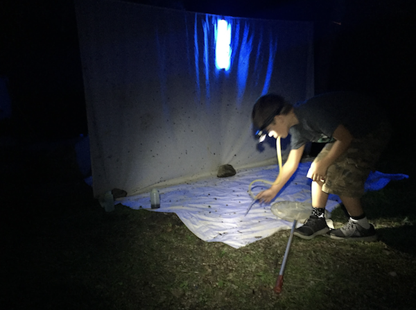
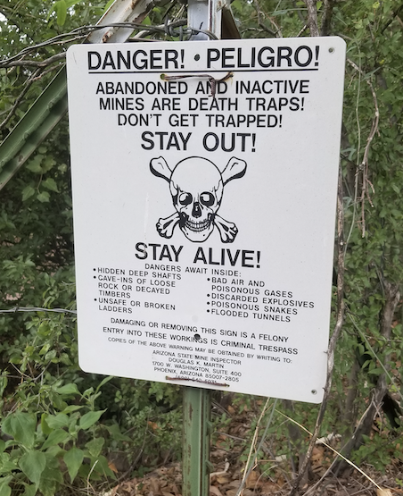

Research
The Blackmon Lab is in the Biology Department at Texas A&M University. Our ultimate goal is to understand how and why the structure of genomes evolves the way it does across the tree of life. To understand genome structure, we study a broad range of organisms, including tomatoes, betta fish, beetles, chickens, and mammals. Genome structure is a broad term, but so are the aspects of genome structure that we investigate (e.g., chromosome number, sex chromosomes, structural mutations). We also have projects that focus on forces that impact genome structure (e.g., epistasis and sexual antagonism).
We use three approaches to investigate each question we face in our research. First, we use theoretical population genetics to ask "what can happen?" Next, we use comparative methods and leverage data from 10s to 100s of species to ask, "what has happened over many millions of years?" Finally, we use genetics and genomics with emerging model organisms to ask, "what is happening from one generation to the next?"
Questions our lab is currently focused on:
1) What evolutionary forces lead to the divergence of sex chromosomes, and what forces act on "old" highly diverged sex chromosomes?
2) Why does chromosome number evolve rapidly in some clades but remains nearly static in others?
3) Is there an ideal chromosome number, and if so, what determines that value?
4) What determines the fate of mutations that expand the proportion of the genome linked to a sex-determining locus?
5) Are there inherent fitness trade-offs between male and female phenotypes, or can a single genome be fit regardless of sex?
6) Does the importance of epistasis vary across plants and animals?
7) How does domestication impact organisms? What can we learn about adaptation and radiation from studying domestication?
Publications
2024
Burch, J., C. Nava, H. Blackmon. Assessing the opportunity for selection to impact morphological traits in crosses between two Solanum species PeerJ 12:e17985. open access
Wilhoit, K.T., E.P. Alexander, H. Blackmon. Worse than nothing at all: the inequality of fusions joining autosomes to the PAR and non-PAR portions of sex chromosomes PeerJ 12:e17740. open access
Sylvester, T., Z. Hoover, C.E. Hjelmen, M.M. Jonika, L.T. Blackmon, J.M. Alfieri, J.S. Johnston, S. Chien, T. Esfandani, H. Blackmon. A reference quality genome assembly for the jewel scarab Chrysina gloriosa G3 Genes| Genomes| Genetics 14 (6). open access
Blackmon, H., M.M. Jonika, J.M. Alfieri, L. Fardoun, J.P. Demuth. Drift drives the evolution of chromosome number I: The impact of trait transitions on genome evolution in Coleoptera. Journal of Heredity. 115 (2) 173-182. open access
Jonika M.M., K.T. Wilhoit, M. Chin, A. Arekere, H. Blackmon Drift drives the evolution of chromosome number II: The impact of range size on genome evolution in Carnivora. Journal of Heredity. esae025. open access
Perry, A., D. Eddelbuettel, G. Rosenthal, H. Blackmon Polly: An R package for genotyping microsatellites and detecting highly polymorphic DNA markers from short‐read data.
Molecular Ecology Resources. 24 (4) e13933. open access
Burch, J., M. Chin, B.E. Fontenot, S. Mandal, T.D. McKnight, J.P. Demuth, H. Blackmon. Wright was right: Leveraging old data and new methods to illustrate the critical role of epistasis in genetics and evolution Evolution. 78 (4) 624-634. open access
Alfieri, J.M., R. Hingoranee, G.N. Athrey, H. Blackmon. Domestication is associated with increased interspecific hybrid compatibility in landfowl (order: Galliformes)
Journal of Heredity 115 (1), 1-10. open access
2023
Chicken Consortium (21 Authors). A pangenome graph reference of 30 chicken genomes allows genotyping of large and complex structural variants. BMC Biology 21 (1) prerprint version
Chicken Consortium (21 Authors). Chicken Genomic Diversity consortium: large-scale genomics to unravel the origins and adaptations of chickens. Cytogenetics and Genome Research 162 (8-9) open access
Alfieri, J.M., M.M. Jonika, J.N. Dulin, H. Blackmon. Tempo and Mode of Genome Structure Evolution in Insects. Genes 14 (2) 336 open access
Alfieri, J.M., T. Johnson, A. Linderholm, H. Blackmon, G.N. Athrey. Genomic investigation refutes record of most diverged avian hybrid Ecology and Evolution 13 (1), e9689 open access
2022
Pitonak, M., M. Aceves, P.A. Kumar, G. Dampf, P. Green. A. Tucker, V. Dietz, D. Miranda, S. Letchuman, M.M. Jonika, D. Bautista, H Blackmon, J.N. Dulin. Effects of biological sex mismatch on neural progenitor cell transplantation for spinal cord injury in mice. Nature Communications 13(1) 1-12 open access
Perry, A., S.E. McGaugh, A.C. Keene, H Blackmon. CaveCrawler: An interactive analysis suite for cavefish bioinformatics. G3 12:8 jkac132 open access
Lotterhos, K., M. Fitzpatrick, H Blackmon. Simulations in Evaluations of Methods in Evolution, Ecology, and Systematics. Annual Reviews in Evolution, Ecology, and Systematics. – accepted open access
Jonika, MM, JM Alfieri, T Sylvester, AR Buhrow, H Blackmon. Why not Y naught. Heredity 129 75-78 open access
Hancock, ZB, ES Lehmberg, H Blackmon. Phylogenetics in Space: How Continuous spatial structure impacts tree inference. Molecular Phylogenetics and Evolution 173 107505 open access
Lo, J, and H Blackmon. Retrogene survival is not impacted by linkage relationships. PeerJ 10, e12822. open access
Alfieri, JM, G Wang, MM Jonika, CA Gill, H Blackmon, GN Athrey. A primer on single-cell sequencing in non-model organisms. Genes 13(2) 380. open access
Morelli, MW, H Blackmon, CE Hjelmen. Diptera and Drosophila Karyotype databases provide insights into the evolution of chromosome number and sex chromosome systems in flies. Frontiers in Ecology and Evolution 10: 832378 open access
2021
Adams, RH, H Blackmon, M. DeGiorgio. Of traits and trees: probabilistic distances under continuous trait models for dissecting the interplay among phylogeny, model, and data. Systematic Biology 70(4) 660-680. open access
2020
Anderson, NW, CE Hjelmen, and H Blackmon. The probability of fusions joining sex chromosomes and autosomes Biology Letters 16(11): 20200648 open access
Ruckman, SN, M Jonika, C Casola, and H Blackmon. Chromosome number evolves at equal rates in holocentric and monocentric clades. PLoS Genetics 16(10): e1009076 open access
Hancock, ZB and H Blackmon. Ghosts of a structured past: Impacts of ancestral patterns of isolation-by-distance on divergence-time estimation. Journal of Heredity 111(6) 573-582 open access
Ruckman, SN and H Blackmon, 2020. The March of the Beetles: Epistatic Components Dominate Divergence in Dispersal Tendency in Tribolium castaneum. Journal of Heredity 111(5) 498-505 open access
Sylvester, T, CE Hjelmen, SJ Hanrahan, PA Lenhart, JS Johnston, and H Blackmon. Lineage-specific patterns of chromosome evolution are the rule not the exception in Polyneoptera insects. Proceedings of the Royal Society B 287(1935) 20201388 open access
Jonika MJ, J Lo, H Blackmon. Mode and tempo of microsatellite evolution across 300 million years of insect evolution. Genes 11(8) 945 open access
Hjelmen, CE, VR Holmes, CG Burrus, E Piron, M Mynes, MA Garrett, H Blackmon , JS Johnston. Thoracic underreplication in Drosophila species estimates a minimum genome size and the dynamics of added DNA. Evolution 74 (4) 1423-1436. PDF
2019
Armstrong, A, NW Anderson, H Blackmon. Inferring the potentially complex genetic architectures of adaptation, sexual dimorphism, and genotype by environment interactions by partitioning of mean phenotypes. Journal of Evolutionary Biology 32 (4) 369-379 PDF
Perkins, RD, JR Gamboa, MM Jonika, J Lo, A Shum, RH Adams, H Blackmon. A database of amphibian karyotypes. Chromosome Research 27(4) 1-7 PDF
Schield, DR, DC Card, NR Hales, BW Perry, GM Pasquesi, H Blackmon, RH Adams, AB Corbin, CF Smith, B Ramesh, and JP Demuth. The origins and evolution of chromosomes, dosage compensation, and mechanisms underlying venom regulation in snakes. Genome research 29(4) 590-601. PDF
Lo, J, MM Jonika, and H Blackmon. micRocounter: Microsatellite Characterization in Genome Assemblies. G3: Genes, Genomes, Genetics 9(10) 3101-3104. PDF
Hjelmen, CE, H Blackmon, VR Holmes, CG Burrus, and JS Johnston. Genome size evolution differs between Drosophila subgenera with striking differences in male and female genome size in Sophophora. G3: Genes, Genomes, Genetics 9(10) 3167-3179. PDF
Blackmon H, J Justison, I Mayrose, EE Goldberg. Meiotic drive shapes rates of karyotype evolution in mammals. Evolution 73(3) 511-523 PDF
Passow, C, AM Bronikowski, H Blackmon, S Parsai, TS Schwartz, SE McGaugh. Contrasting patterns of rapid molecular evolution within the p53 network across mammal and sauropsid lineages. Genome Biology and Evolution 11(3) 629-643 PDF
2018
Gale, CC, E Borrego, H Blackmon, JK Harper, D Richardson, and H Song. Investigating a Photolytic Metabolite in the Nocturnal Grasshopper Schistocerca ceratiola (Orthoptera: Acrididae). Annals of the Entomological Society of America 112(1) 50-55. PDF
2017
Blackmon H, Y Brandvain. Long-term fragility of Y chromosomes is dominated by short-term resolution of sexual antagonism - Genetics PDF
Blackmon H, L Ross, D Bachtrog. Sex determination, sex chromosomes and karyotype evolution in insects. – Journal of Heredity 108:1 78-93 – recommended by Faculty of 1000. PDF
Adams R, D Schield, D Card, H Blackmon, and T Castoe. GppFst: Genomic posterior predictive simulations of Fst and dxy for identifying outlier loci from population genomic data – Bioinformatics – doi:10.1093/bioinformatics/btw795. PDF
2016
Blackmon H and JP Demuth. An information-theoretic approach to estimating the composite genetic effects contributing to variation among generation means: moving beyond the joint-scaling test for line cross analysis. – Evolution 70:2 420-432. PDF
Asian Longhorn Beetle Consortium (67 Authors). Genome of the Asian longhorned beetle (Anoplophora glabripennis), a globally significant invasive species, reveals key functional and evolutionary innovations at the beetle-plant interface. Genome Biology 17:1 227 - Responsible for analysis of genome structure evolution. PDF
Ross, L and H Blackmon. Sex Determination. In R. Kliman (Ed.) Encyclopedia of Evolutionary Biology. 81-88 Elsevier Academic Press. doi:10.1016/B978-0-12-800049-6.00146-3. PDF
Adams R, H Blackmon, J Reyes-Velasco, D Schield, D Card, A Andrew, N Waynewood, T Castoe. Microsatellite landscape evolutionary dynamics across 450 million years of vertebrate genome evolution. Genome 59:5 295-310 - Editor’s choice. PDF
2015
Blackmon H, N Hardy, L Ross. The evolutionary dynamics of haplodiploidy: genome architecture and haploid viability. Evolution 69:11 2971-2978. PDF
Blackmon H and JP Demuth. The fragile Y hypothesis: Y chromosome aneuploidy as a selective pressure in sex chromosome and meiotic mechanism evolution. Bioessays 37:9 942-950. PDF
Blackmon H and JP Demuth. Coleoptera Karyotype Database. The Coleopterists Bulletin 69:1 174-175. PDF
Ross, L, H Blackmon, P Lorite, V Gokhman, and N Hardy. Recombination, chromosome number and eusociality in the Hymenoptera. Journal of Evolutionary Biology 28:1 105-116. PDF
Blackmon H and JP Demuth. Genomic origins of insect sex chromosomes. Current Opinion in Insect Science 7 45-50. – recommended by Faculty of 1000. PDF
2014
Blackmon H and JP Demuth. Estimating tempo and mode of Y chromosome turnover: explaining Y chromosome loss with the fragile Y hypothesis. Genetics 197:2 561-572. PDF
Blackmon H Coleoptera Karyotypes: The evolution of sex chromosomes and chromosome number. Newsletter of the Ontario Entomological Society 19:2 19–21. PDF
Streicher, JW, TJ Devitt, CS Goldberg, JH Malone, H Blackmon, and MK Fujita. Diversification and asymmetrical gene flow across time and space: lineage sorting and hybridization in polytypic barking frogs. Molecular Ecology 23:13 3273-3291. PDF
Ashman T, D Bachtrog, H Blackmon, EE Goldberg, MW Hahn, M Kirkpatrick, J Kitano, JE Mank, I Mayrose, R Ming, SP Otto, CL Peichel, MW Pennell, N Perrin, L Ross, N Valenzuela, and JC Vamosi. Tree of Sex: A database of sexual systems. Nature Scientific Data 1:140015. – responsible for 11,526 invertebrate records and all figures. PDF
2012
Blackmon H and JP Demuth. Ring Species and Speciation. Encyclopedia of Life Science. www.els.net. PDF
Resources
We devote a fair amount of our efforts to producing new datasets, software, and resources for both research and teaching. If you have any questions about these projects please dont hesitate to contact us for additional information.
Lab Meetings
Lab meetings are mandatory for all lab members and occur on Fridays at 1:00 PM in BSBW 425. If we are discussing a paper all students are expected to come to lab meetings with either questions or comments.
meet with Dr. Blackmon on zoom
Teaching
Fall 2024 Journal Club: This semester's journal club will focus on recent insights into the evolutino of sex chromosomes based on both theoretical and genomic approaches.
Experimental Design Course: This course is intended to provide a foundation in the proper design of scientific research projects in the field of biology. A wide range of biological experiments are covered, and each type of experiment is explored with an eye toward choosing the appropriate statistical technique for analysis. By the end of the course, successful students will be able to design biological studies that are statistically tractable and perform basic statistical analyses using the programming language R.
Orientation to graduate school: This course is designed to give you the tools and knowledge to be as successful as possible in completing your Ph.D. and securing the job you desire. Topics covered include mentoring relationships, curation of your online/professional identity, and building a understanding of how academia functions.
R for biologists seminar: R is currently an essential tool for most evolutionary biologists. This seminar includes tutorials and example datasets for many basic analyses in R that are commonly encountered in ecology and evolution. The seminar starts off with the most basic steps (installation) so no prior experience is needed to use these exercises.
Foundations of evolutionary biology: An understanding of the foundational ideas that the modern synthesis of evolutionary biology is built on is essential for asking intelligent questions and understanding how your research fits into a larger understanding of life. I offered a foundations of evolutionary biology seminar course for graduate students that provided a structured environment to discuss some of the most important papers in evolutionary biology. This website contains a schedule and PDF files for all of the readings in this course.
GitHub software repository: I do most all of my development and analyses in public repositories.
R packages
chromePlus is a collection of R functions generate markov models appropriate for the evolution of chromosome number and binary traits. These models once constructed can be fit via maximum likelihood or Bayesian MCMC methods avaialable in the package diversitree.
micRocounter is an R package to identify all 2-6mer repeates in a genome assembly. It has been optimized for speed and can calculate statitics for larger genomes in a manner of minutes.
evobiR is a collection of R functions that I have developed for different projects. The functions in this package can be loosely organized into either analysis of empirical data, simulation functions, or those created primarily for didactic purposes. A vignette demonstrating its use is available. Instructions for installing the latest version from github are available here.
The package SAGA2 is a collection functions to ease and hopefully improve the quality of line cross analysis of genetic architecture. The overall goal is to allow for an easy and straightforward implementation of model averaged analysis using AICc. A vignette demonstrating its use is available. Instructions for installing the latest version from github are available here.
Databases
Karyotype Databases: Karyotypes are a highly variable and complex trait that offers an opportunity to detect changes in genome organization, uncover phylogenetic history, and distinguish cryptic species. The current databases contains more than 8,000 records for amphibians, coleoptera, and polyneoptera. The databases allows users to select the records that they wish to retrieve based on either taxonomy or trait values and builds customized tables of the results in a new window.
The Tree of Sex Database: this is a product of a working group sponsored by the National Evolutionary Synthesis Center which sought to compile all information on sex determination systems across the tree of life. To date, we have collected over 30K records including more than 10K invertebrates. Much like the Coleoptera Karyotype Database, our goal is to make this data widely available allowing researchers across the globe to use data that was previously difficult to collect.
CaveCrawler is a reactive web interface for bioinformatic analysis of data in the Mexican tetra (Astyanax mexicanus), an emerging evolutionary model organism. CaveCrawler consists of 4 subpages: a Gene Search page for querying data about specific genes, a Transcription page for finding genes whose transcriptional levels differ between samples, a Population Genetics page for investigating statistics on diversity and selection, and a GO Term Info page for identifying and obtaining information on GO terms-of-interest.
Other
I recently built a cluster consisting of 26 Raspberry Pi 4Bs. I have assembled some notes to guide anyone else through this process
I have assembled some links to graduate student funding opportunities for graduate students.
Lab Members
Principal Investigator

Heath Blackmon received his Ph.D. in the Demuth lab at the University of Texas at Arlington in 2015 while studying the evolution of sex chromosomes and karyotypes in Coleoptera and invertebrates. He then transitioned to a postdoc for two years at the University of Minnesota. While there he collaborated with Emma Goldberg and Yaniv Brandvain on projects spanning population genetics and macroevolution. Heath opened his own lab at Texas A&M University in the fall of 2017. CV - September 2024
 https://orcid.org/0000-0002-5433-4036
https://orcid.org/0000-0002-5433-4036Research Staff

Tahmineh Esfandani joined the lab in 2020 as a research scientist. She earned a Bachelors degree in Cellular and Molecular Biology from Iran and followed this with a masters in genetics and bioinformatics from Trinity College in Ireland. She has a broad background including managing a large mouse colony and extensive wetlab experience working in core facilities at the University of Oregon. Tahmineh is involved in a range of project focused on sex chromosome evolution.

Michelle Jonika is a postdoctoral scholar whose work focuses on understanding the dynamics of highly labile aspects of genome structure and sex chromosomes.
LT Blackmon is a founding member of the lab. He has participated in years of field work. He has broad interests in biology and is currently working on a project involving morphometrics of Chrysina species.
Graduate Students

Jorja Burch joined the lab in 2021 through the Biology Ph.D. program. Jorja’s research focuses on understanding genetic architecture and the role of gene interactions in evolutionary outcomes. She is passionate about scientific communication and is pursuring a career in scientific publishing.

Emma Lehmberg joined the lab in 2022 as an EEB student co-advised with Gil Rosenthal. Emma studies the relationships between hybridization, sexual conflict, and speciation in live-bearing fishes (Poeciliidae) using phylogenetics and comparative methods. She is broadly interested in the influences of sexual selection, breeding system variation, and sexual conflict on diversification across the tree of life.

Sean Chien joined the lab in 2022 as a biology Ph.D. student. Sean has broad interests that combine evolutionary biology and Coleoptera. Fun fact: He loves fishing.
Megan Copeland joined the lab in 2022 as biology Ph.D. student. Megan's research broadly focuses on understanding genome structure. Her career interests include industry positions coinciding with genomics, bioinformatics, and forensics.
Andres Barboza Pereira joined the lab in 2023 as a Genetics Ph.D. student. Andres has interests in evolution and genome structure. He enjoys theoretical and computational approaches to answering questions in biology.
Kaya Harper joined the lab in 2023 as a Biology Ph.D. student co-advised with Dr. Alex Keene. Kaya's interests lie at the intersection of evolutionary biology, genetics, and ecology, focusing on the genetic mechanisms that impact physiology and behavior in a diverse array of species.
Post-Bacc Students
Zhaobo Hu joined the lab as a postbac student in 2024. He is broadly interested in evolution. He is exploring topics like sexual conflict, selfish genetic elements, and the evolution of mutation rates.
REU Students

Tyana Rogers joined the lab as an REU student in the summer of 2024. Tyana is a first-generation college student, and she aspires to be a Genetic Counselor in the future.
Alumni
Priscilla Glenn: Postdoctoral Researcher at Texas A&M UniversityJamie Alfieri: Postdoctoral Researcher at UT Austin
Terrence Sylvester: Postdoctoral Researcher at UT Memphis
Sarah Ruckman: Ph.D. student FSU
Nathan Anderson: Ph.D. student UW Madison
Johnathan Lo: Ph.D. student Berkeley
Zachary Hoover: Ph.D. student Texas A&M University
Annabel Perry: Ph.D. student Harvard
Max Chin: Ph.D. student at UC Davis
Kayla Wilhoit: Ph.D. student at Duke
Carl Hjelmen: Assistant Professor UVU
Current and former undergraduate students
Jennifer Elbert
Leen Fardoun
David Gafford-Gabbey
Mayra Gonzalez
Emily Ha
Chandler Kassel
Lizzie Opp
Ellena Pavese
Riddhi Perkins
Julia Plocica
Alejandro Resto
Paulina Serra Rossi
Amy Shum
Eleanor Simpson
Kayla Wilhoit
Madyson Wynn
Elexys Peoples
Maria Prado
Juliette Strope
Arslan Imran
Gracie Fischer
Alix Garcia
Trinity Garcia
Varun Potluri
Kate Saenz
Sebastian Alves
Zoya Wani
Sarah Schmalz
Kenzie Laird
Alyssa McPhail
Spiral Rosart-Brodnitz
Paige Maxa
Kevin Bolwerk
Wyatt Stogsdill
Crystal Nava
Mikayla Benjamin
Calendar
If you need to scedule an appointment with me the best approach is to pick a time that is not currently blocked out and then email me asking to meet at that time. I am not guranteed to be in my office unless you let me know you will be coming by (I often work in coffee shops!)
Lab News
For the latest happenings check out our twitter feed below.
Joining the lab
We are always seeking new students that can bring diversity, enthusiasm, and dedication into the lab.
We believe strongly in the importance of creating an inclusive supportive environment for all lab members. To achieve this we ask all lab members to sign a document that makes explicit our expectations for all lab members. This document includes the following statements:
- I will participate in weekly lab meetings and journal clubs.
- I will attend departmental and IDP seminars.
- I will prepare for our regular progress/pitfalls meetings
- I will proof-read manuscripts from other lab members.
- I will maintain a set of lab notes, including directories of data, annotated codes and versions, detailed methods. Lab notes will be sufficient to reproduce results without additional instructions.
- I will participate in general lab responsibilities (beetle maintenance, maintain common areas, community outreach events).
- As a graduate student I will be available in the lab/office most days from 9:00 – 17:00.
- As an undergraduate researcher I devote a minimum of 10 hours a week to research and I will make a two semester commitment to work in the lab.
- I value diversity in intellectual background, race, sex, and identity.
- I will treat all others with respect and dignity.
Lab Pictures
Evolution Conference 2019
Riddhi decorated the lab door for us
Late night tacos after collecting
Searching for tiger beetles in Willcox AZ

Michelle Jonika's award winning artwork
No beetle is out of reach with this net
Bernice

Looking for Mordellidae
East Texas collecting trip
I'm too slow
Prada in West Texas
Setting up lights for a night of collecting

LT checking the sheets for bugs
2019 collecting during monsoons in AZ was productive

Lots of these signs around field sites in AZ
Inaugral Aggie Vets Who Code Class
Abbi caught a lot of giant millipedes
Checking out alien artifacts in Roswell

Terrence finding the only shade in White Sands
Nellie was one of our first lab members
Movie night
Carl sand surfing
Social distancing but still spending time together
Terrence checking out a tarantula